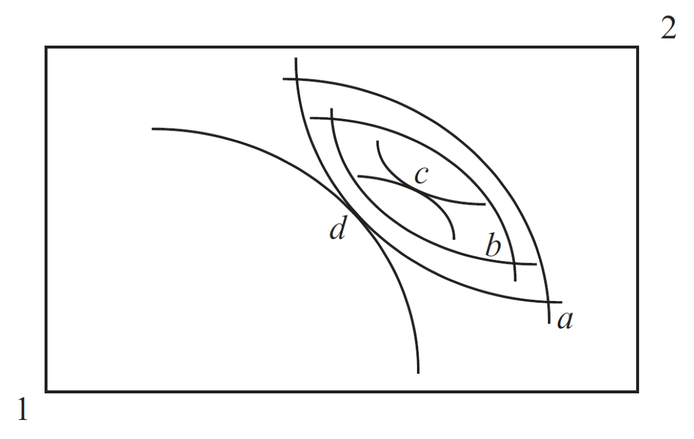
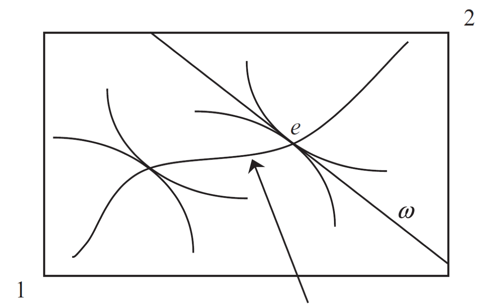

Unidad 1. Es la política, estúpido! Introducción a la economía política
Los economistas deben no sólo conocer sus modelos económicos, sino que también entender de política, intereses, conflictos, pasiones, es decir, la esencia de la vida colectiva. Por un pequeño período de tiempo, uno puede realizar cambios a través de decretos: pero para que ellos persistan, uno debe construir coaliciones y tener gente que los soporte. Es decir, se debe ser un político.
[Alejandro Foxley, ex Ministro de Finanzas de Chile]
Enfoque de la economía política moderna: síntesis Utiliza el enfoque de equilibrio general de la teoría macroeconómica de la política y explota las herramientas de la teoría de la elección racional para el análisis de los problemás principales de la teoría de la elección pública
Intereses. Representados por preferencias de diferentes agentes por alternativas de políticas. Se modelan al nivel individual.
Instituciones. Restricciones creadas por los humanos que estructuran la interacción económica, política y social.
Ideas. Incluyen paradigmas, sentimientos públicos, programas y encuadres que moldean e impactan el tipo y forma de las decisiones adoptadas.
Gasto público (\(\%PIB\)) y PBI per capita
Evolución gasto público (\(\%PIB\)) - Paises industriales
Evolución gasto público (\(\%PIB\)) - Países en desarrollo
Recaudacion tributaria (\(\%PIB\)) y PBI per capita
Evolución recaudación tributaria (\(\%PIB\)) - Países industriales
Primer teorema del bienestar (1TDB) \(\longrightarrow\) cualquier asignación que resulta de un equilibrio competitivo es Pareto-eficiente
Segundo teorema del bienestar (2TDB) \(\longrightarrow\) bajo preferencias convexas, cualquier asignación Pareto-eficiente puede resultar en un equilibrio competitivo (mediante una reasignación de las dotaciones iniciales)
 
Cada dotación origina un equilibrio
Dotaciones y consumos
Implica redistribución de dotación
Se puede alcanzar cualquier resultado eficiente en el sentido de Pareto a través de (1) redistribución de las dotaciones iniciales (impuestos lump-sum) y luego (2) dejar que los mercados actúen libremente
Suponga que la economía hay un 50% de gente incapacitada para trabajar (ingresos \(0\)) y 50% de personas que pueden trabajar y ganar \(100\)
Economía política de la política económica